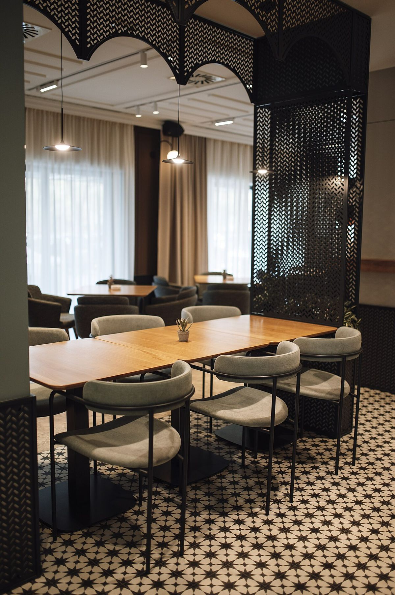
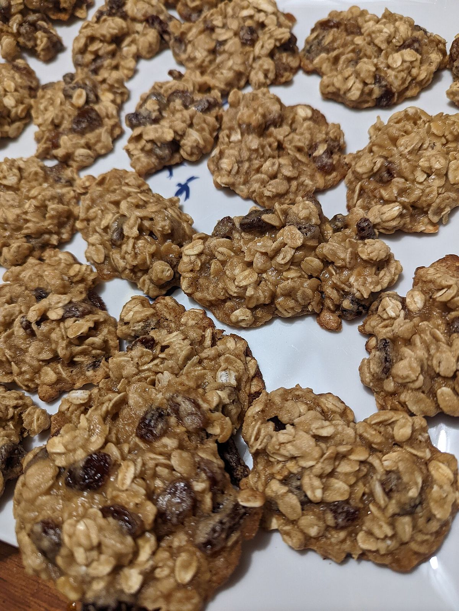

ABOUT
お店について
白と墨の、静かな一杯
ひと息つく場所に、静かな余白を。
余計な飾りをそっと減らして、白と墨の落ち着いた色合いの中で、ゆっくりとお過ごしいただける。そんなカフェの姿を思い描いています。
毎日のなかで、少しだけ足を止めたいとき。ひとりで過ごしたいときも、誰かと話したいときも、気軽に立ち寄れる場所でありますように。
※このコンセプトは、ホームページ制作側の案です。店名の由来や店主様のお考えを示すものではありません。

大切にしたいこと
- NO.01
ゆっくりとした時間
急がず、ほっとひと息つける時間を大切にしたい。
- NO.02
落ち着いた空間
静かで居心地のよい雰囲気を目指したい。
- NO.03
気軽に立ち寄れること
思い立ったときに、ふらりと寄れる場所でありたい。
※制作側の案です。

店舗概要
- 店名
- 内川カフェ
- 所在地
- 富山県射水市中央町1-3
- 電話
- 0766-75-9180
- @uchikawa_cafe
- 営業時間
- 準備中(お問い合わせください)
- 定休日
- 準備中(お問い合わせください)
- 席数
- 準備中(お問い合わせください)
- 駐車場
- 準備中(お問い合わせください)
- スタッフ紹介
- 準備中(お問い合わせください)